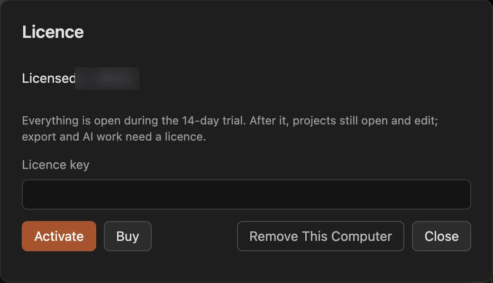

Licence and trial
Every feature is open for 14 days, without a card. After that a licence keeps it going.
The trial
The top bar shows how long is left: Trial: 14 days left. Click it to open the Licence window.
When the trial ends
Your projects still open, and you can keep editing them. Export and AI work need a licence. Nothing you made is lost.
Buy
In the Licence window press Buy. The checkout opens in a window of the app and shows the price. When the payment is done, the licence key on the receipt is activated on this computer by itself. The key also comes by email.
Activate a key
Paste your key into Licence key and press Activate. Activated on this computer. confirms it, and the top bar says Licensed.

Two computers
One licence works on two computers. To use it on a third, free one of them first: open the Licence window there and press Remove This Computer. Then activate the key on the new one.
Offline
Kilnframe checks the licence over the internet now and then. If it cannot for 3 weeks, it asks you to connect once.
If it says something else
- This key is in use on 2 computers. Remove one of them first.
- This key was not found. Check it and try again.
- The subscription has ended. Renew it to export and use AI work again.
- On Linux, if the key is kept only until you quit, no keyring service is running: start GNOME Keyring or KWallet, then activate again.